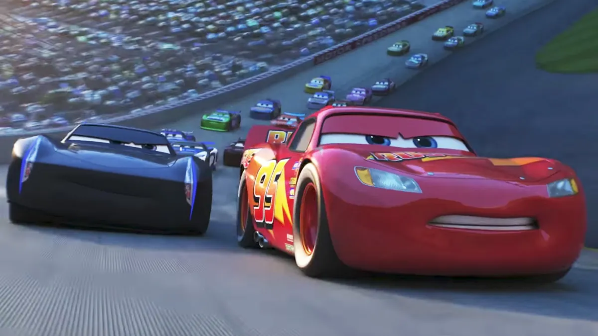
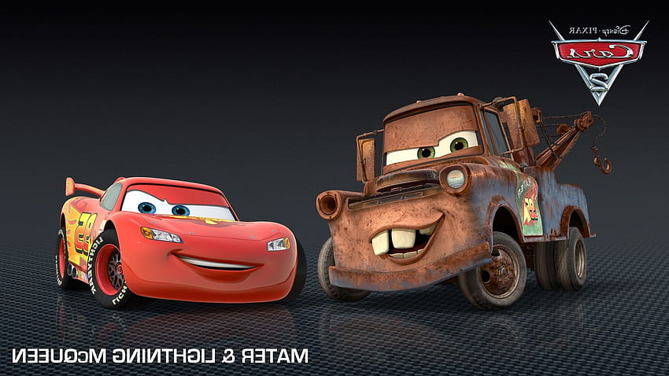

La aventura de Rayo Mcqueen
🏅 🏆 🏆 🏅

Rayo McQueen estaba disfrutando de un tranquilo día en Radiador Springs,
el pequeño pueblo que tanto había aprendido a amar.
Después de tantas carreras, a veces necesitaba alejarse de la pista y disfrutar de la vida a un ritmo más pausado.
Mate estaba practicando sus maniobras de rescate y reparaciones improvisadas, mientras
 Sally preparaba el restaurante para los turistas que llegaban al pueblo.
Sally preparaba el restaurante para los turistas que llegaban al pueblo.
Pero Rayo sentía que necesitaba algo más: una nueva aventura, algo que pusiera a
prueba no solo su velocidad, sino también su ingenio y reflejos. Fue entonces cuando
escuchó rumores sobre una pista secreta en el desierto, escondida entre cañones y dunas
de arena. La pista estaba cubierta de curvas imposibles, remolinos de arena y caminos
que cambiaban con el viento. Nadie en Radiador Springs se atrevía a recorrerla… excepto Rayo.
Al día siguiente, cargó combustible, revisó sus llantas y salió hacia el desierto con
su típico espíritu competitivo. Mientras conducía bajo el sol abrasador, el aire se
llenaba de polvo dorado y el horizonte parecía infinito.
Rayo sentía que cada kilómetro
lo acercaba a algo más que una carrera: una prueba de su valentía. Incluso Mate lo
seguía de cerca, grabando cada momento con su cámara para luego hacer un “documental”
improvisado.
Mientras Rayo McQueen recorría la pista, notó que algo extraño sucedía: un remolino de arena bloqueaba el camino y no podía girar lo suficiente para esquivarlo.
Al principio pensó que sería fácil, como cualquier curva que había enfrentado antes, pero la arena comenzó a levantarse en torbellinos enormes, girando con fuerza
a su alrededor. Cada segundo que pasaba, la visibilidad disminuía, y el rugido del viento mezclado con el crujido de la arena lo envolvía por completo.
Rayo sintió que la pista estaba viva, como si la arena misma quisiera detenerlo.

Intentó acelerar y frenar, pero la arena lo arrastraba hacia un cañón cercano. Sus llantas patinaban, levantando nubes de polvo que lo cegaban.
Cada movimiento debía ser calculado al milímetro; un giro demasiado brusco podría hacerlo caer, y un frenazo equivocado lo lanzaría directo al abismo.
Sintió el corazón latiéndole en el pecho y un cosquilleo de miedo recorriendo su chasis, algo que rara vez experimentaba. Recordó que en carreras pasadas
siempre había confiado solo en la velocidad, pero esta vez no bastaría.
A punto de perder el control, recordó los consejos de Mate: “No siempre es la velocidad, sino la técnica y la calma lo que salva”. La voz de su amigo resonó
en su mente como un faro en medio de la tormenta de arena. Rayo respiró hondo, tratando de calmar los nervios y enfocarse en cada detalle: la dirección del viento,
la textura de la arena, la inclinación de las dunas. Cada giro debía ser suave pero firme, cada acelerón medido al límite de sus ruedas.
Con paciencia, empezó a usar la arena a su favor. Aprovechó los pequeños surcos que se formaban en la pista, deslizándose con cuidado y dejando que la fuerza del remolino
lo ayudara a tomar impulso en lugar de luchar contra él.
Cada maniobra era un delicado baile entre control y riesgo; podía sentir cómo cada fibra de su chasis vibraba con
el esfuerzo. La adrenalina mezclada con concentración lo hizo sentir más vivo que nunca, consciente de que cada movimiento podía marcar la diferencia entre un desastre y
la victoria.Finalmente, tras varios segundos que parecieron eternos, Rayo McQueen encontró el ángulo perfecto. Con un giro calculado y un ligero acelerón, logró deslizarse entre los
obstáculos, usando la misma arena que lo había amenazado como un trampolín para escapar del remolino.
La tensión desapareció en cuanto recuperó el control completo y
respiró aliviado.
Cuando los aplausos y el rugir de los motores se desvanecieron en la distancia, Rayo McQueen se detuvo por un momento a contemplar el horizonte.
El sol del desierto teñía el cielo de un rojo anaranjado, reflejándose sobre su brillante carrocería.
Respiró profundo —si es que los coches pudieran hacerlo— y sonrió. Había sentido la adrenalina, el polvo, la presión y la duda… pero al final,
había entendido algo mucho más valioso que cualquier trofeo. No se trataba solo de correr rápido, sino de saber cuándo acelerar y por qué hacerlo.
 De regreso en Radiador Springs, todo el pueblo estaba reunido para recibirlo. Luigi colgaba banderines tricolores sobre el cartel de bienvenida,
Guido hacía sonar su bocina a modo de fanfarria, y Sargento había organizado una formación impecable con sus conos decorativos.
Sally, con una expresión de orgullo sincero, se acercó y le dio un suave roce en el parachoques. “Sabía que lo lograrías, Rayo”, dijo con voz cálida.
McQueen respondió con esa sonrisa suya, mezcla de picardía y humildad recién aprendida.
De regreso en Radiador Springs, todo el pueblo estaba reunido para recibirlo. Luigi colgaba banderines tricolores sobre el cartel de bienvenida,
Guido hacía sonar su bocina a modo de fanfarria, y Sargento había organizado una formación impecable con sus conos decorativos.
Sally, con una expresión de orgullo sincero, se acercó y le dio un suave roce en el parachoques. “Sabía que lo lograrías, Rayo”, dijo con voz cálida.
McQueen respondió con esa sonrisa suya, mezcla de picardía y humildad recién aprendida.
Mate, por supuesto, no podía quedarse atrás. Llegó derrapando, cubierto de polvo hasta los faros, con una risa contagiosa.
“¡Lo viste, Rayo! ¡Saliste de ese remolino como si fueras un relámpago de verdad! Aunque… me dio miedo que salieras volando y acabaras en la luna.”
Rayo soltó una carcajada. “No sería la primera vez que me meto en un lío por querer ir demasiado rápido, amigo.”
Y justo cuando todos creyeron que la jornada había terminado, una sombra se proyectó sobre la calle principal.
Un rugido metálico, grave y poderoso, resonó desde la colina. Todos levantaron la mirada: una silueta desconocida descendía a toda velocidad,
dejando una estela de polvo dorado. Era un coche con pintura brillante, un diseño nunca visto, mitad clásico, mitad futurista.
Frenó frente al grupo con elegancia y dijo con una voz suave pero firme: —Vaya carrera, McQueen. He oído que aún hay quien puede darme pelea.
El silencio se hizo por un instante. Rayo lo observó con intriga, y una chispa de emoción iluminó sus faros.
—¿Y tú quién eres? —preguntó.
El extraño sonrió.
—Digamos que… soy el resultado de todos los que te han querido ganar.
Mate dio un salto. “¡Oh, oh! ¡Eso suena a desafío!”
Rayo giró su mirada hacia Sally, luego hacia el horizonte donde el sol ya empezaba a ocultarse. Sonrió con calma, sin la prisa de otros tiempos.
—Entonces tendrás que esperar a mañana. Hoy… tengo una carrera más importante.
—¿Más importante? —replicó el recién llegado.
—Sí —dijo Rayo, mirando a sus amigos—. La carrera para disfrutar de lo que ya he ganado.
El misterioso coche soltó una risa corta y asintió.
—Sabia respuesta, McQueen. Pero recuerda… el camino nunca termina.
Y con un último rugido del motor, desapareció entre la arena del desierto, dejando tras de sí un brillo dorado que se confundía con las últimas luces del atardecer.
Rayo quedó mirando hacia la distancia, pensativo, hasta que Mate rompió el silencio con su típica ocurrencia:
—Oye, Rayo… ¿crees que ese tipo usará aceite premium o del barato?
